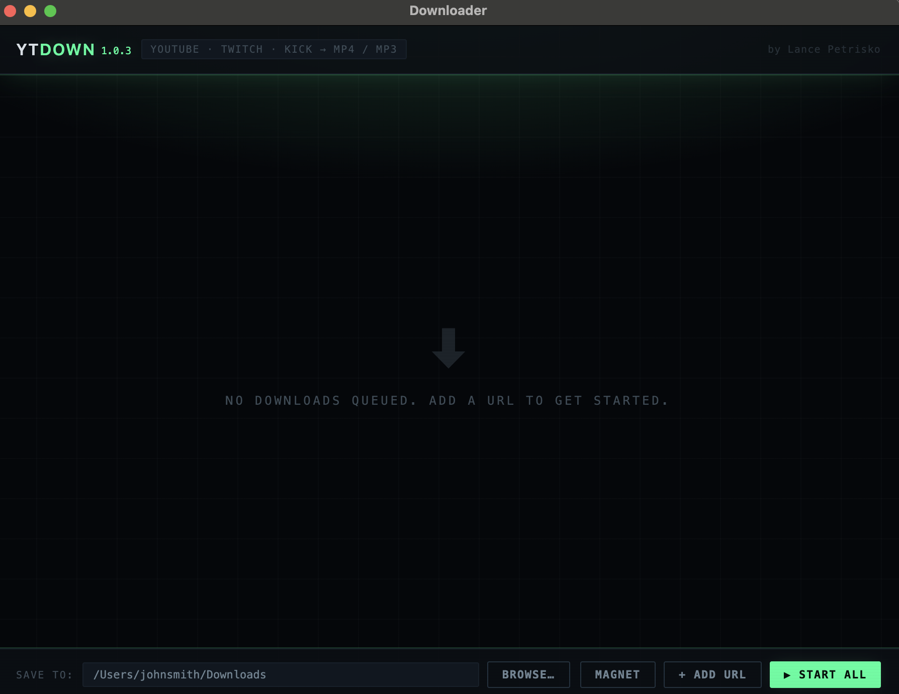

YTDown

YTDown is a local desktop app for downloading YouTube, Twitch, and Kick videos as MP4 or MP3. It runs on Windows and macOS is completely self hosted.
The thing I cared most about was that it takes zero setup. Most downloaders assume you already have yt-dlp and ffmpeg installed and on your PATH. But the downloader ships both inside the installer, so there is no terminal, no Homebrew, and nothing to configure. If you already have your own copies, the app ignores them and prefers its bundled ones, so a broken or outdated system install can't break it.
Electron / Node.js / yt-dlp / ffmpeg